背景
公司内部要对搜索中心进行改造，降低运维成本，leader让我负责整块的设计和编码以及前端展示，整个开发历时30个工作日，完成第一期，现在把一些当中的点做一次share，各位看官轻喷。
现有系统的状态
所在团队做的是跨境电商的服务，海量的商品存在mysql集群当中，当商品上架的时刻，需要将mysql的数据同步到elasticsearch集群当中，目的是为了给用户提供快速的搜索服务，同步的最小单元是表，即将一张表同步到es集群，老的系统的做法是当随着业务的增长，表结构会变化，或者增加，修改表等等一些DDL操作，之前的做法是每当这些变化发生的时候，需要在搜索中心的工程当中编写正对于变化的表的同步代码，适配mysql的变化，比如新增加了一张表，需要对这张表的数据同步到es，就需要写一个正对于此表的同步任务，修改表也是如此，需要制定开发周期，排工作量，测试计划等等。
之前的架构设计
针对于每一个mysql数据库实例都对接一个canal服务,canal监听mysql的binlog日志，然后将日志push到mq（canal支持kafka和rocketmq）里边，然后我们的app就是mq的消费者，消费mq的消息，消费的过程就是从mq的broker执行poll，拉取消息，然后将消息解析，得到消息里边的业务id，通过业务id去真实的mysql数据查询数据（重新查询一次mysql，这么做的原因是保证数据的强一致性），然后将数据刷新到es集群，完成消息的消费。
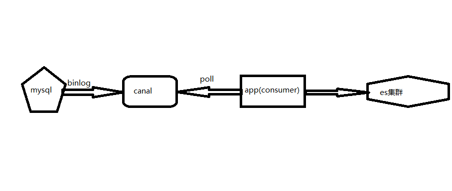
现有系统存在的问题
- 新增表需要进行针对性编码
- 修改表需要进行针对性编码
- 新增加数据库需要进行针对性编码
- 索引的版本管理混乱
- 需要手动掉es的http api切换别名(开发人员在使用es的搜索api查询的时候都是使用的别名，一个别名只能同时指向一个索引，如果发生索引升级，需要指向新的索引版本，别名的存在就是为了做无缝切换)
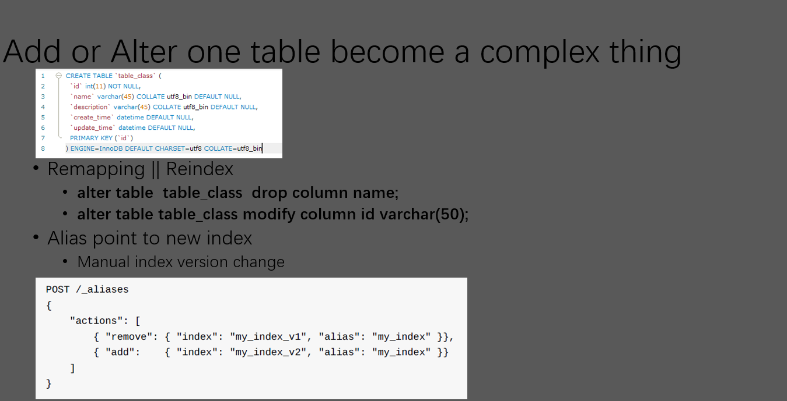
- 需要手动掉es的http api切换别名(开发人员在使用es的搜索api查询的时候都是使用的别名，一个别名只能同时指向一个索引，如果发生索引升级，需要指向新的索引版本，别名的存在就是为了做无缝切换)
- 数据类型映射管理刀工火种，人工做jdbc到es的数据类型映射太繁琐，还容易出错。
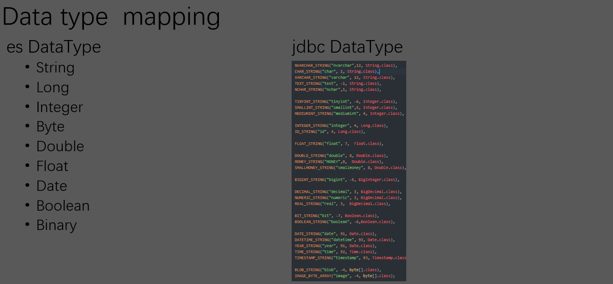
现有轮子考察
Elasticsearch-jdbc
- Not support Elasticsearch 5.0
- Not support delete and unfriendly incremental update
- https://github.com/jprante/elasticsearch-jdbc/issues/915
logstash-jdbc
- Create new config need restart server
- https://github.com/logstash-plugins/logstash-input-jdbc.git
elasticsearch-river-mysq
- Stop maintain
go-mysql-elasticsearch
- Unstable
- Can not alter table format at runtime
- Can not change too many rows at same time in one SQL
- https://github.com/siddontang/go-mysql-elasticsearch
现有轮子都存在各种各样的问题，阿里的dataX对增量是同步不太友好，而且对es的一些特性支持不友好,比如parent-child关系映射直接不支持。
新改造支持的特性
- 动态创建主题(mq topic)
- 前提是预先创建canal实例
- 动态创建数据库
- 动态创建表
- 支持es的Parent-child 关系
- 支持es映射的递归嵌套(支持nest嵌套)
- 同步异常，支持断点续传
- 表的一对多，一对一关联
- 索引的区域更新
- 索引版本管理
- 日常数据增量校验，保证每天的数据一致性（避免各类bug导致数据不一致，一个数据一致性保险检查程序）
- 在大表的情况，分布式创建索引
- 元数据类型的业务数据，当元数据修改的时候，需要将其关联的业务索引更新，这里支持延迟任务调度，并且是分布式的方式。
- Ik的动态词库
功能演示
es集群搭建、apollo配置中心部署此处不在熬述，参考官方和之前的博客。
数据库脚本配置请使用工程里边的init.sql执行初始化.
项目分为三个工程：
- tdl-mysql-elasticsearch 核心引擎配合apollo
- tdl-mysql-elasticsearch-api api层，为前端提供接口，配合apollo
- tdl-mysql-elasticsearch-web vue前端展示工程
topic
- topic 列表
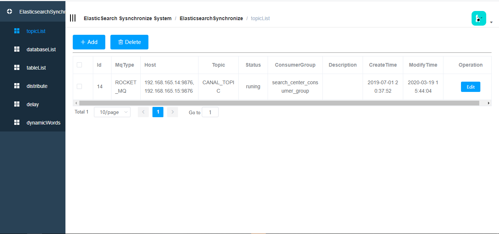 - topic 新增或者修改
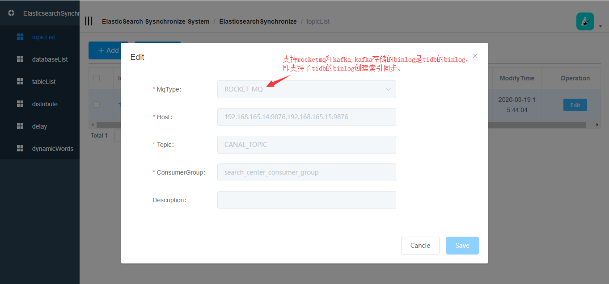
- topic 列表
数据库操作
- 数据库列表
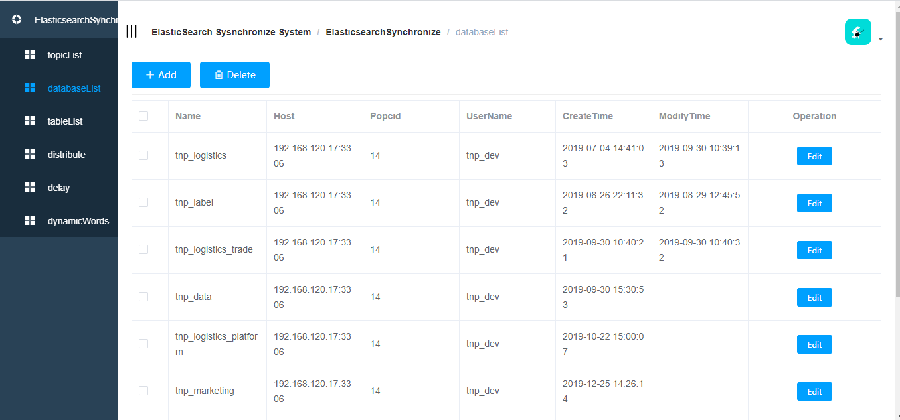 - 数据库新增和修改
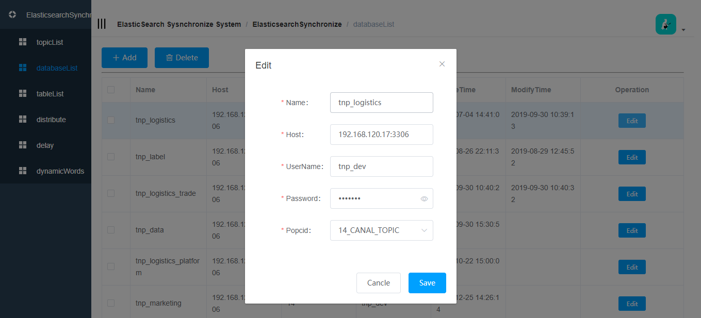
- 数据库列表
表
表的列表
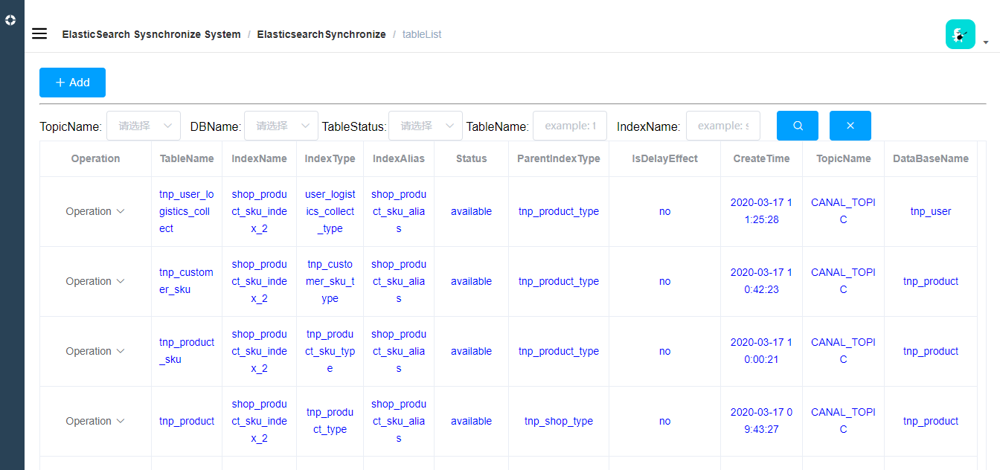
一张表对应es里边的一个索引;
如果是parent-child关系，是多张表映射到一个索引上，每一张表代表一个类型;表新增修改
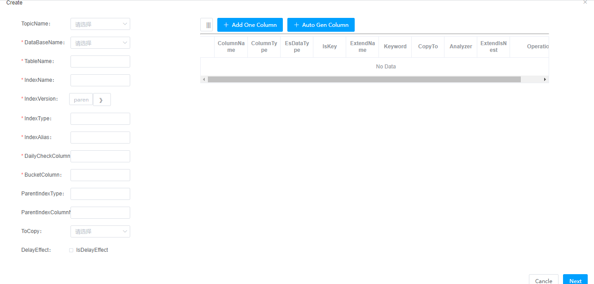
IndexName：表对应的索引名称
IndexType：索引的type，一个索引有多个type
IndexAlias：索引的别名，线上都是用的别名，如果索引发生了升级，只需要将别名指向新的索引版本即可，完成无缝切换
DailyCheckColumn：日常检查的字段，一般是修改时间字段，用来对数据做校验，同步的时候也会用到这个字段，用时间戳做增量同步
BucketColumn: 分布式创建索引或者分布式延迟刷新元数据的时候根据这个值对表进行分桶，一般是表的创建时间
ParentIndexType：父子关系的时候，当前是child，ParentIndexType指向的是parent的index type，父子关系中父是一个type，child是一个type，2个type必须在同一个索引里边。
ParentIndexColumnName：子表中父表的pid字段名称。
ToCopy：参考es官网解释：https://www.elastic.co/guide/en/elasticsearch/reference/current/copy-to.html
DelayEffect: 是否延迟刷新，当一张表设置了这个属性为true，那么这张表的binlog在消费的时候，不会刷新到索引，而且保存在mysql数据库里边，这些快照数据等待调度任务去消费，刷新到索引里边去，因此是延迟的方式，而且支持分布式的方式，被设置为true的表会在【delay】菜单展示，后续会对delay菜单做介绍。
Add One Column操作：添加一列
Auto Gen Column: 根据左侧填写的表名，自动拉取所有的列表字段添加
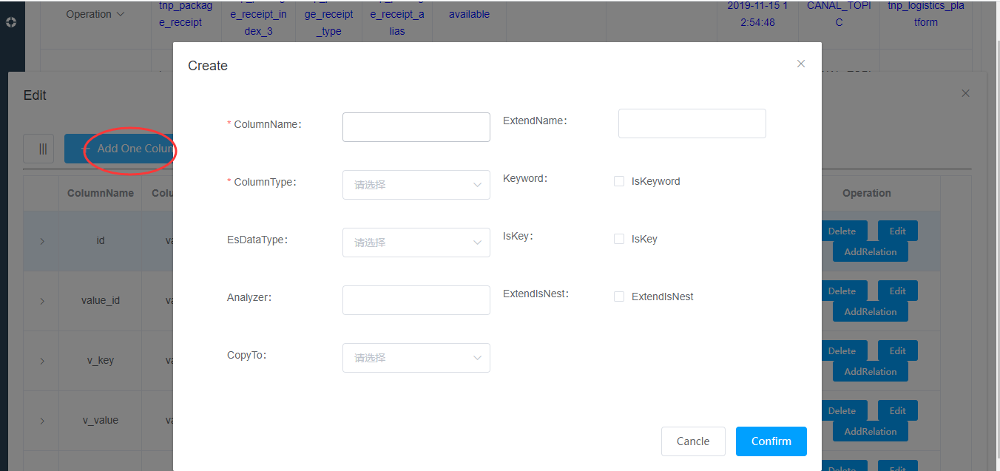
ColumnName：字段名称
ColumnType：字段的数据类型
EsDataType：es的数据类型
Analyzer：分析器（参考es官方doc：https://www.elastic.co/guide/en/elasticsearch/reference/current/search-analyzer.html）
CopyTo：参考官方doc：https://www.elastic.co/guide/en/elasticsearch/reference/current/copy-to.html
ExtendName：扩展对象名称，通过【AddRelation】按钮添加扩展对象的时候此名称可以被覆盖
Keyword：参考官方doc：https://www.elastic.co/guide/en/elasticsearch/reference/current/keyword.html
IsKey：标识当前字段是主键
ExtendIsNest：扩展对象是否是嵌套的，可以被字段关系覆盖，参考官方doc：https://www.elastic.co/guide/en/elasticsearch/reference/current/query-dsl-nested-query.html字段关联(支持多级嵌套)
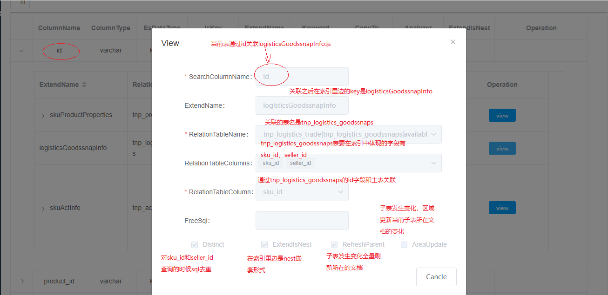
SearchColumnName：当前要关联的字段名称。
ExtendName：关联的对象在当前表里边的扩展名称，此处可以覆盖字段上的 ExtendName
RelationTableName：关联的表
RelationTableColumns：关联的表要加载它的那些字段
RelationTableColumn：当前SearchColumnName和RelationTableName的RelationTableColumn发生关联，一般是id之类的。
ExtendIsNest：是否是嵌套的，此处可以覆盖字段的ExtendIsNest
freeSql: 关联子表附带的查询条件，比如 delete=0 and status = 1
Distinct: 对sql的查询结果进行mysql的distinct关键字去重
refreshParent: 当子表数据发生变化，而且子表在索引里边是nest的内嵌的方式，那么子表的数据变化会触发所在文档的更新
AreaUpdate:当子表数据发生变化，而且子表在索引里边是nest的内嵌的方式，那么子表的数据变化会触发所在文档的更新，更新方式采用区域更新的方式，和refreshParent的差别是少了很多无关的数据的查询，区域更新采用es的脚本更新文档的方式进行的表的状态和操作
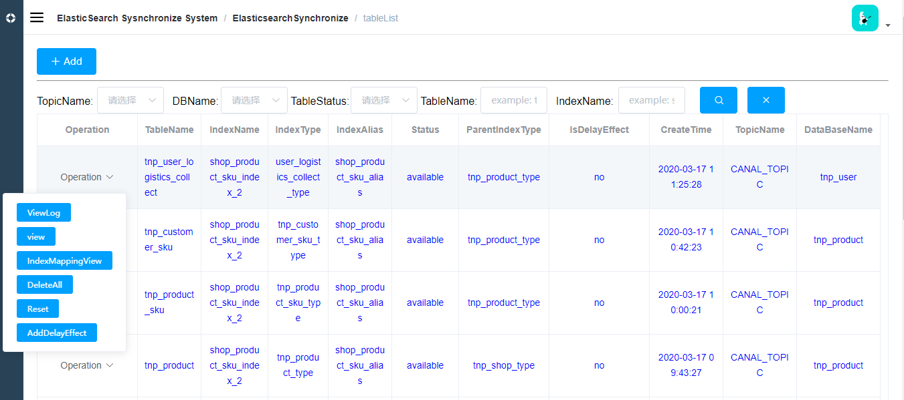
另外表的状态在history和avaiable状态的时候会有deleteAll操作权限，deleteAll会把抽象和es当中的索引全部删除，危险操作；
表的抽象创建完毕之后状态是unavailable状态，表在创建新的索引之后，首先是changing状态，标识正在创建新的索引版本，版本会自动加一，上一个版本的索引会置为history，新的索引的状态是available状态，标识正在同步mysql。
Reset：状态置为可用、版本号清空、索引任务删除、当前版本索引删除，如果当前索引正在创建将会被强制终止，主要作用是用于创建异常的人工恢复。
AddDelayEffect: 当前表的变化不会立刻刷新到索引文档里边去，而是由调度任务去完成，一般元数据的表，并且这种元数据经常发生改变。分布式治理
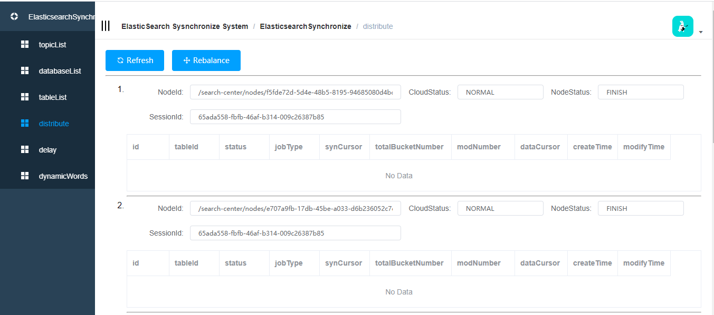
refresh: 刷新列表
Rebalance: 重新执行负载均衡延时刷新
- 打标了延迟处理的表：
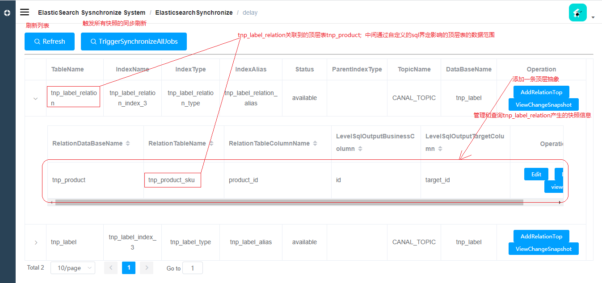 - 元数据影响的顶层表的关系维护
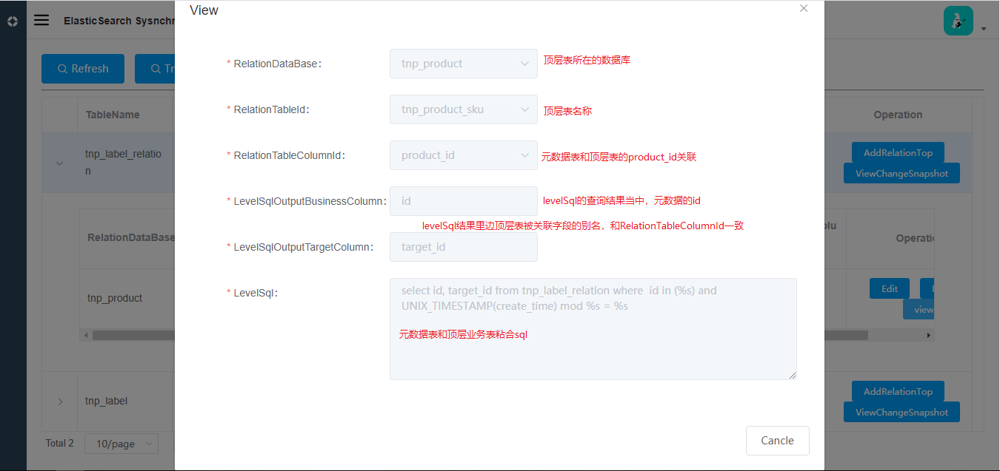 - 添加的顶层表top黏连关系
- 查询和管理快照列表
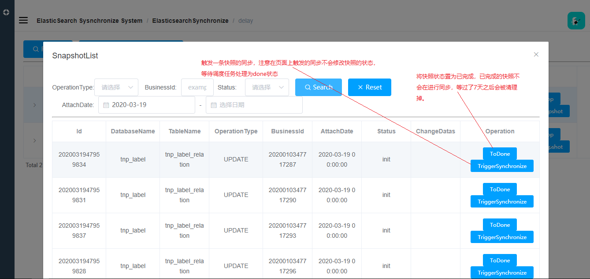
- 打标了延迟处理的表：
动态词库
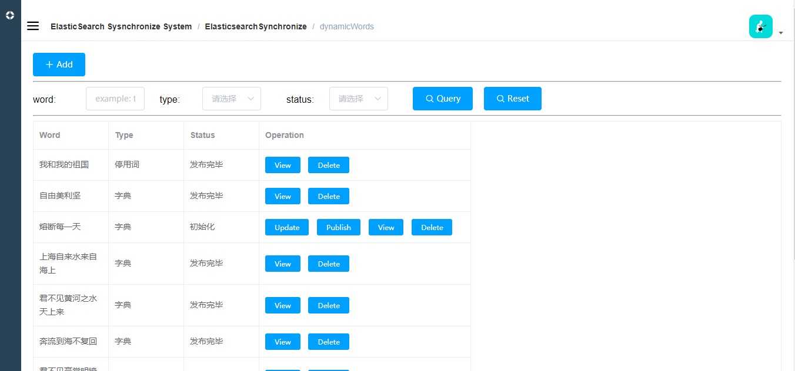
词库状态分为初始化和发布完毕2种，只有发布完毕的才会进入es的动态词库。
词库分为扩展词库和停用词词库。
一个单词没有发布之前可以修改，发布完毕之后不可以修改，只能删除。
初始化和发布完成的都可以删除。
es对Ik的动态词库配置参考：https://github.com/medcl/elasticsearch-analysis-ik
架构设计
整体架构图
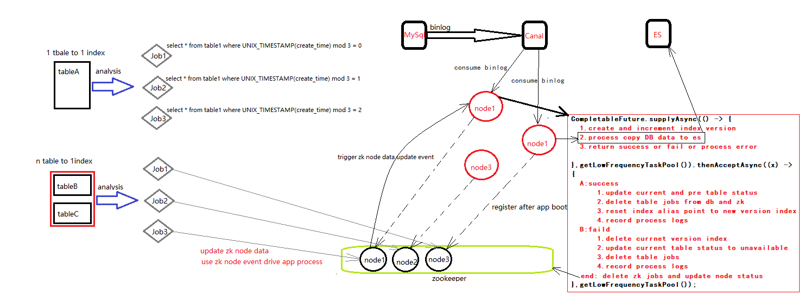
每个节点都有一个searchContext，首先解释下searchContext，searchContext是这个上下文，里边存储了当前可以同步的主题，数据库，表，以及正在changing的tableId，还有同步线程的引用等等，ListenTopicTask会每隔三分钟刷新一次上下文；
整个轮子有2条主线，以searchContext为中心，searchContext下面是索引创建流程，上面是消息监听流程（索引已经创建完毕，mysql数据变化监听，然后将变化推送到es集群）；
索引创建流程将索引创建完毕之后，会更新上下文，然后消息监听流程会使用更新之后的上下文。
索引创建流程
索引创建流程就是在页面发起【createIndex】操作，后端会进行5个步骤的操作：
创建索引请求的发起，这个过程会做一些表和字段的校验，以及一些判重操作，比如当前表已经同步过，或者正在同步，又或者在同步任务比价多，同步任务被放到任务队列里边也是会被发现的，这些数据是不允许往下执行的。
一个创建索引的请求就是对一张表的数据到es的全量同步，table_id是当前要同步表的id，这张表首先会通过create_time分为多个桶，total_bucket_number是集群当中部署的app数量，mod_number是某个节点的顺序号(mod_number <= total_bucket_number),data_cursor是同步的游标，一般是表的id字段的值，job_type是任务的类型，创建索引是index类型，delay任务调度是job类型，params是任务的参数，比如在job类型，只同步某个业务id，可以放在这个参数里边，syn_cursor已经废弃，不再描述。集群当中存活的机器数n就是一张表生成的tnp_search_job的记录数。
分桶之后每台机器执行的sql会根据mod_number进行分区拉取数据:select * from table where UNIX_TIMESTAMP(A.create_time) mod total_bucket_number = mod_number order by A.modify_time;A指的是业务表名称。
1
2
3
4
5
6
7
8
9
10
11
12
13
14CREATE TABLE `tnp_search_job` (
`id` varchar(64) COLLATE utf8_bin NOT NULL,
`table_id` varchar(64) COLLATE utf8_bin DEFAULT NULL COMMENT 'table的id',
`status` varchar(45) COLLATE utf8_bin DEFAULT NULL COMMENT '同步状态',
`syn_cursor` timestamp(6) NULL DEFAULT NULL COMMENT '按照时间同步时间游标',
`total_bucket_number` int(11) DEFAULT NULL COMMENT '桶总数',
`mod_number` int(11) DEFAULT NULL COMMENT '桶编号',
`data_cursor` varchar(64) COLLATE utf8_bin DEFAULT NULL COMMENT '业务数据同步游标',
`job_type` varchar(45) COLLATE utf8_bin DEFAULT NULL COMMENT '任务类型：index:索引创建任务/task:调度任务',
`params` varchar(4096) COLLATE utf8_bin DEFAULT NULL COMMENT '任务参数',
`create_time` datetime DEFAULT NULL,
`modify_time` datetime DEFAULT NULL,
PRIMARY KEY (`id`)
) ENGINE=InnoDB DEFAULT CHARSET=utf8 COLLATE=utf8_bin COMMENT='记录表的同步状态和同步游标';负载均衡过程：
发起负载均衡的节点执行负载均衡逻辑，每个节点都会把节点的抽象写到zookeeper里边，抽象对象如下：1
2
3
4
5
6
7
8
9
10
11
12
13
14
15
16
17
18
19
20
21
22
23
24
25
26
27
28
29
30
31
32
33
34
35
36
37
38
39
40
41
42
43
44
45
46
47
48
49
50
51
52
53
54
55
56
57
58
59
60
61
62
63
64
65
66
67
68
69
70
71
72
73
74
75
76
77
78
79
80
81
82
83
84
85
86
87
88
89
90
91
92
93
94
95
96
97
98
99
100
101
102
103
104
105
106
107
108
109@Data
public class NodeJobEntity {
public NodeJobEntity(){}
public NodeJobEntity(CloudStatusENUM cloudStatusENUM, NodeStatusENUM nodeStatusENUM, NodeJobTypeENUM nodeJobTypeENUM,
List<SearchJobBO> indexJobs, String rebalanceSessionId) {
this.cloudStatusENUM = cloudStatusENUM;
this.nodeStatusENUM = nodeStatusENUM;
this.nodeJobTypeENUM = nodeJobTypeENUM;
this.indexJobs = indexJobs;
this.rebalanceSessionId = rebalanceSessionId;
}
public NodeJobEntity(CloudStatusENUM cloudStatusENUM, NodeStatusENUM nodeStatusENUM, NodeJobTypeENUM nodeJobTypeENUM,
List<SearchJobBO> indexJobs, JobParam params, String rebalanceSessionId) {
this.cloudStatusENUM = cloudStatusENUM;
this.nodeStatusENUM = nodeStatusENUM;
this.nodeJobTypeENUM = nodeJobTypeENUM;
this.indexJobs = indexJobs;
this.params = params;
this.rebalanceSessionId = rebalanceSessionId;
}
/**
* 集群状态
REBALANCING("rebalancing"),
NORMAL("normal");
*/
private CloudStatusENUM cloudStatusENUM;
/**
* 节点状态
CLEAN("clean"),
CLEAN_OK("clean_ok"),
INIT("init"),
FINISH("finish");
*/
private NodeStatusENUM nodeStatusENUM;
/**
* 任务节点类型
INDEX("index"),
JOB("job");
*/
private NodeJobTypeENUM nodeJobTypeENUM;
/**
* 节点任务
*/
private List<SearchJobBO> indexJobs;
/**
* 任务参数
*/
private JobParam params;
/**
* 工作线程池存活的线程数和未完成的任务数=
* ThreadPoolManager.getHighFrequencyTaskPool().getQueue().size() + ThreadPoolManager.getHighFrequencyTaskPool().getActiveCount()
*/
private Integer aliveThreadMount = -1;
/**
* rebalanceId 每次rebalance都会生成一个rebalanceSessionId，可以用来区分是否发生了新的rebalance。
*/
private String rebalanceSessionId;
}
SearchJobBO:
@Data
public class SearchJobBO {
private String id;
private String tableId;
/**
* @see SearchJobStatusEnum
INIT("init","初始化"),
RUNNING("running","运行中"),
ERROR("error","同步异常"),
DONE("done","完毕");
*/
private String status;
private Timestamp synCursor;
private Integer totalBucketNumber;
private Integer modNumber;
private String dataCursor;
/**
* @see NodeJobTypeENUM
INDEX("index"),
JOB("job");
*/
private String jobType;
private String params;
private Date createTime;
private Date modifyTime;
/**
* 是否被负载均衡中断
*/
private volatile Boolean breakByRebalance;
}负载均衡的过程[创建索引任务和延迟刷新任务同样的流程]：
- 首先会加分布式锁;
- 清除所有存活节点的任务数据，节点集群状态是REBALANCING，节点状态是CLEAN状态;
- 对NodeJobEntity的indexJobs数组清空，nodeStatusENUM置为clean，将这个信息写到zk节点里边，节点通过zk数据变化事件得到变化的数据，检查本地线程池是否有存活的任务，如果有就等待，等待线程池执行完毕(同步阻塞等待)，如果线程池没有任务，那么将nodeStatusENUM置为cleanok，写到zk
- 负载均衡发起的节点阻塞检查所有节点是否清除完毕，如果完毕，继续下面的步骤；
- 清空所有节点任务完毕，进入任务分配阶段;
- 根据任务数量和节点数量平均分配任务，任务会写到NodeJobEntity的indexJobs数组，nodeStatusENUM为init，cloudStatusENUM为rebalancing，然后写入到zk。
- 任务下发到各个节点完毕;
- 节点接到下发的任务后本地执行异步同步任务。
- 解锁
节点异步执行同步任务[创建索引任务和延迟刷新任务同样的流程]
SynchronizeJobTask右侧的代码是SynchronizeJobTask的核心逻辑，在死循环当中，使用了CompletableFuture，而且是完全异步的，同步过程是异步，同步完毕（成功后者失败）之后也是异步的，一张表由于使用了CompletableFuture，就会对应使用2个线程分别去同步和处理同步结果。在supplyAsync当中做的工作有：- 将当前表的同步任务状态从init置为running状态
- 表的状态置为changing状态
- 记录开始日志
supplyAsync占用一个线程去处理任务。
thenAcceptAsync是对同步完毕之后的后置处理: - 最后一个任务完成，并且不存在异常同步的任务，并且没有被负载均衡中断，并且是同步成功
- 记录日志
- 表的同步任务状态置为完毕
- 将当前同步表的状态置为可用
- 将上一个版本的索引状态置为history
- 将索引别名指向新的索引版本
- 删除mysql中当前表的任务抽象: delete from tnp_search_job where table_id = XXX and job_type=’index’;
- 将在同步期间修改或者新增的数据（类似于jvm垃圾收集里边的浮动垃圾）刷新到新的索引里边，和这个步骤在图片中没有画出。
- 最后一个任务完成，并且不存在异常同步的分桶，并且没有被负载均衡中断，并且是同步失败
- 记录日志
- 删除mysql中当前表的任务抽象: delete from tnp_search_job where table_id = XXX and job_type=’index’;
- 将当前同步表的状态置为不可用
- 删除刚刚创建的索引版本映射
- 记录失败日志
- 最后一个任务完毕，但是被负载均衡中断
- 不做任何操作
- 最后一个任务完毕，而且是异常中断退出任务，一般是同步出现了问题, 比如long转换为integer超界
- 删除刚刚创建的索引版本
- 当前table状态回滚为不可用状态
- 如果同步失败直接删除表的同步任务数据，用户重新添加同步：delete from tnp_search_job where table_id = XXX and job_type=’index’;
- 记录失败日志
- 非最后一个任务，并且不是重新负载中断而且同步成功
- 更新job状态为done：update tnp_search_job set status = ‘done’ where id=XXX
- 记录成功日志
- 非最后一个任务，并且不是重新负载中断而且同步失败
- 更新job状态为done：update tnp_search_job set status = ‘error’ where id=XXX
- 记录失败日志
- 非最后一个任务，被负载均衡中断
- 不需要处理
- 非最后一个任务，异常中断退出任务，一般是同步出现了问题, 比如long转换为integer超界
- 更新job状态为done：update tnp_search_job set status = ‘error’ where id=XXX
- 记录失败日志
刷新数据到es集群
当同步任务被执行的时候，内部就会将数据从mysql的一张表按照步长同步到es集群当中，主要是由SynchronizeFactory来做的，SynchronizeFactory是一个同步工厂的抽象，他的实现类是EsSynchronizeFactoryImpl，同步过程如下：- 获取jdbc驱动，jdbc驱动使用的c3p0数据库连接池，并且设置了不会让链接空闲失效，在SynchronizeFactory层面是模板模式。
- 组装存储到es的JSON对象，这个对象是按照建立的mapping格式组装的，我们设置的父子关系，嵌套等设置，这个JSON对象都要遵守。
- 检查索引和索引type，如果没有的话就会创建。
- 父子关系的检查，es当中规定parent type和child type必须在同一个es分片，否则就会产生查询混乱，当我们修改了一个child的pid的时候，这个时候pid对应的parent可能不和child在同一个分片，这个时候我们要将child删除，重新插入child，确保child和parent在同一个分片，parent-child扩展阅读
- 调用es的java api刷新数据到es集群。
消息监听流程
当一个索引创建成功处于available状态的时候，就会被消息监听流程使用，当mysql产生binlog，会被canal收到，然后canal将binlog推送到mq里边，然后我们的应用就是mq的消费者，我们的消费者是可以在界面上配置的，配置完毕之后就会在程序里边创建一个消费者实例，进入到监听，监听到消息之后消费的流程如下：
- 拿到应用的上下文
- 解析消息
- 数据库和消息匹配检查
- table和消息匹配检查
- 过滤不感兴趣的操作，只对插入，修改，删除感兴趣
- 获取jdbc驱动，jdbc驱动使用的c3p0数据库连接池，并且设置了不会让链接空闲失效，在SynchronizeFactory层面是模板模式。
- 组装存储到es的JSON对象，这个对象是按照建立的mapping格式组装的，我们设置的父子关系，嵌套等设置，这个JSON对象都要遵守。
- 检查索引和索引type，如果没有的话就会创建。
- 父子关系的检查，es当中规定parent type和child type必须在同一个es分片，否则就会产生查询混乱，当我们修改了一个child的pid的时候，这个时候pid对应的parent可能不和child在同一个分片，这个时候我们要将child删除，重新插入child，确保child和parent在同一个分片，parent-child扩展阅读
- 调用es的java api刷新数据到es集群(支持批量刷入)。
Delay延迟刷新
问题描述
在构建索引的时候，有些表属于元数据，或者一张表的变动涉及到大量表的同步，导致同步阻塞，这种问题导致了binlog消息的阻塞，影响后续业务的进行。
解决方案
设置某些表的修改在索引生效可以是延迟的，即，当天做了修改，第二天才会生效。
在表tnp_search_table里边增加字段：is_delay_effect,意思是是否延迟生效;
如果某个表被设置了延迟生效，那么当这个表的数据发生变化的时候，不会执行回溯过程，比如标签表是一个被商品表引用的元数据表，如果一个标签被成千上万个商品打标，那么如果标签的元数据发生变化，那么这些成天上万的商品数据的索引中的标签信息需要被更新，而更新是比较缓慢的，是一个大数据量的更新，耗时比较长，因此，如果在标签表上设置了is_delay_effect=yes，那么这个回溯会在当天晚上被调度任务执行，第二天生效。
记录案发现场
如果某个表设置了is_delay_effect=yes那么需要立刻记录案发现场到数据库。
案发现场格式(tnp_change_snapshot)：
id, dataBase_id,table_id,table_name,operation_type, changeDatas, status
唯一序列，数据库id ，表id ,表名 ,操作类型(修改/删除),当前变化的数据,状态
修改和新增
修改和新增都会有幂等，后边的更新覆盖前边的更新，减少无谓的消耗;
只记录【id,dataBase_id,table_id,table_name,operation_type,status】
删除
记录【id,dataBase_id,table_id,table_name,operation_type,changeDatas,status】
zk树形结构
1 | /search-center/[PERSISTENT] |
分片策略
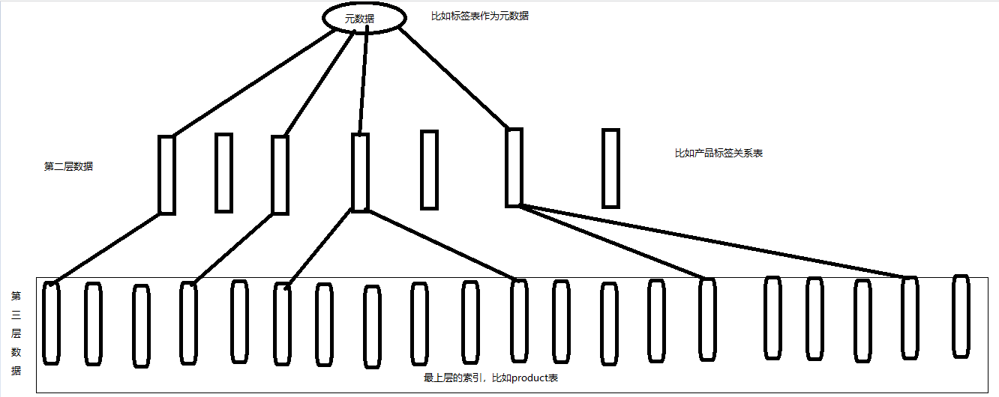
方案一【基于抽象】
首先根据我们保存的表关系的抽象模型，找到标签表关联了那张业务表，比如标签通过标签关系表关联了product表，那么我们的调度任务就要把整个product表所有数据刷新一遍，造成没有受到标签影响的product也刷新了，资源浪费，但是对已有程序复用性高。
方案二【基于数据】
从元数据的表开始往上回溯，一直到product表，中间要经过中间表的层层递归往上找到 product，优点是只更新元数据相关联的product，缺点是如果一个标签影响了10万product的数据，那个这个十万数据的刷新数据集不能拆分为桶，因为这个是一个单机多层递归而且是分页的过程，做分布式分桶很复杂，即，不能使用分布式的方式拆分压力。对已有程序复用性高。
方案三【混合】
新建表：
1
2
3
4
5
6
7
8
9
10
11
12
13
14
15
16
17
18
19
20
21
22
23
24
25
26
27
28
29
30CREATE TABLE `tnp_search_change_snapshot` (
`id` varchar(64) COLLATE utf8_bin NOT NULL,
`database_id` varchar(64) COLLATE utf8_bin DEFAULT NULL COMMENT '数据库id',
`table_id` varchar(64) COLLATE utf8_bin DEFAULT NULL COMMENT '表id',
`c_table_name` varchar(45) COLLATE utf8_bin DEFAULT NULL COMMENT '表名称',
`operation_type` varchar(45) COLLATE utf8_bin DEFAULT NULL COMMENT '操作类型(update/delete)',
`business_id` varchar(64) COLLATE utf8_bin DEFAULT NULL COMMENT '业务id',
`change_datas` varchar(4096) COLLATE utf8_bin DEFAULT NULL COMMENT '发生变化的数据，用于删除额情况',
`c_status` varchar(45) COLLATE utf8_bin DEFAULT NULL COMMENT '状态：init,running,error,done',
`attach_date` date DEFAULT NULL COMMENT '数据进入搜索系统的时间',
`create_time` datetime DEFAULT NULL,
`modify_time` datetime DEFAULT NULL,
PRIMARY KEY (`id`),
UNIQUE KEY `unit_index` (`database_id`,`table_id`,`operation_type`,`business_id`,`c_status`,`attach_date`)
) ENGINE=InnoDB DEFAULT CHARSET=utf8 COLLATE=utf8_bin COMMENT='案发现场快照表'
CREATE TABLE `tnp_search_relation_top` (
`id` varchar(64) COLLATE utf8_bin NOT NULL,
`table_id` varchar(64) COLLATE utf8_bin DEFAULT NULL COMMENT ' 当前表id',
`relation_data_base_id` varchar(64) COLLATE utf8_bin DEFAULT NULL COMMENT '关联数据库id',
`relation_table_id` varchar(64) COLLATE utf8_bin DEFAULT NULL COMMENT '关联表id',
`relation_table_column_id` varchar(45) COLLATE utf8_bin DEFAULT NULL COMMENT '关联表的字段id',
`level_sql` varchar(2048) COLLATE utf8_bin DEFAULT NULL COMMENT '当前层级的sql',
`level_sql_output_business_column` varchar(64) COLLATE utf8_bin DEFAULT NULL COMMENT 'level_sql输出的业务id',
`level_sql_output_target_column` varchar(64) COLLATE utf8_bin DEFAULT NULL,
`create_time` datetime DEFAULT NULL,
`modify_time` datetime DEFAULT NULL,
PRIMARY KEY (`id`),
UNIQUE KEY `rt_unit_index` (`table_id`,`relation_table_id`)
) ENGINE=InnoDB DEFAULT CHARSET=utf8 COLLATE=utf8_bin COMMENT='表关联的顶层表的关系'
A-(DB1-从快照表收集数据)-程序固定写死-调度任务发起的节点执行:
select database_id,table_id,business_id from tnp_search_change_snapshot where status=”init”
B-(DB2-中间数据-分桶-分页)-tnp_search_relation_top.level_sql字段-桶节点执行:
select lr.target_id,lr.target_type,label.label_name from tnp_label label right join tnp_label_relation lr on label.id=lr.label_id
where lr.label_id in (A.business_id) and UNIX_TIMESTAMP(lr.create_time) mod 6 = 1 limit 1,20
C-(DB3-业务数据刷新)-桶节点执行:
select * from tnp_product【tnp_search_relation_top.relation_table_id】 where id in (B.target_id) limit 1,20
程序复用性低，编写新的逻辑。
风险：
1、只能支持跨2个业务数据库（支持同一个数据库水平拆分）。
调度
- 调度任务扫描tnp_change_snapshot，得到调度列表。将每一个调度抽象为线程可运行的实体;
- 获取当前集群可用机器数量（zk临时节点数量）;
- 调度和rebalance是互斥的2个任务;
- 如果当前集群正在REBALANCING，job类型是index，那么snapshopJobs无法执行，线程等待重试，重试次数是有限制的;
- 如果当前集群正在REBALANCING，job类型是调度(job)，那么index重负载无法执行，线程等待重试，重试次数是有限制的;
- 开始执行调度任务，设置当前任务的db状态是running，如果任务中断（断电），那么重启之后会重新拉起running的任务;
- 当一个任务执行完毕之后，线程会删除这个任务的DB和zk里边的数据;
- 到目前为止系统有2种调度：
- 复盘调度：当天发生变化的数据，晚上重新覆盖一次;
- 数据延迟生效调度：针对于引起蝴蝶效应的数据进行生效;
类图
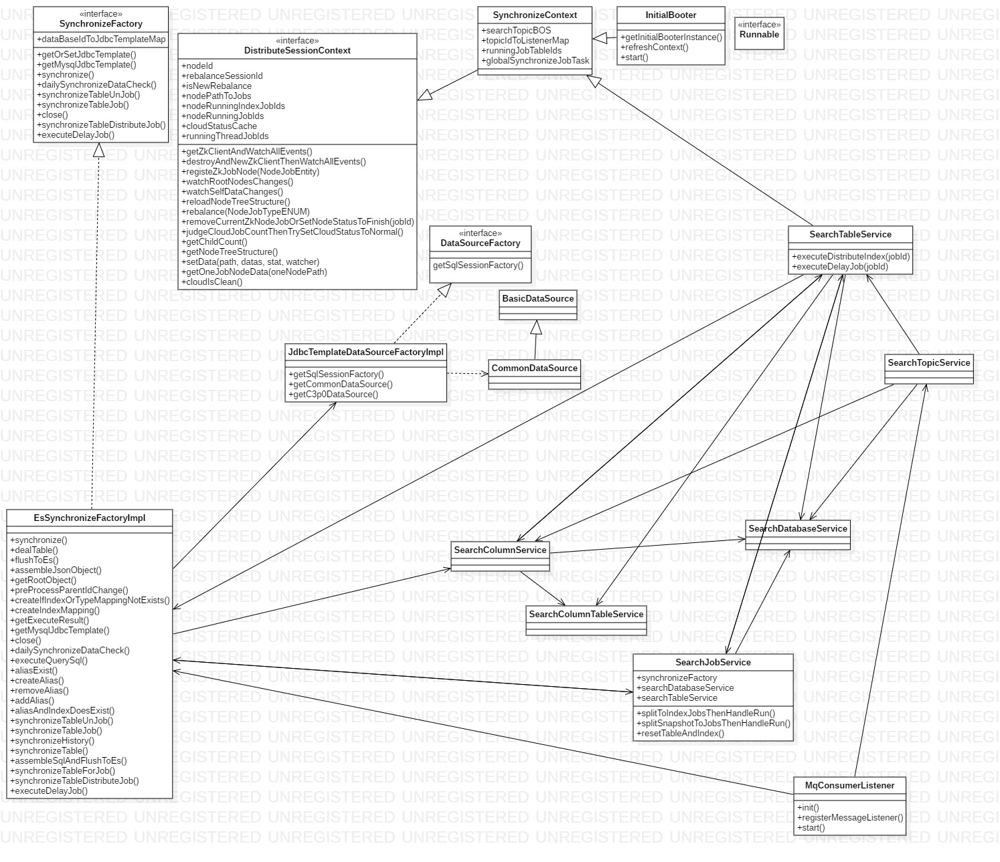
启动流程图
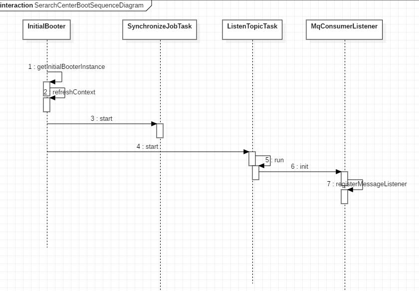
索引创建流程图
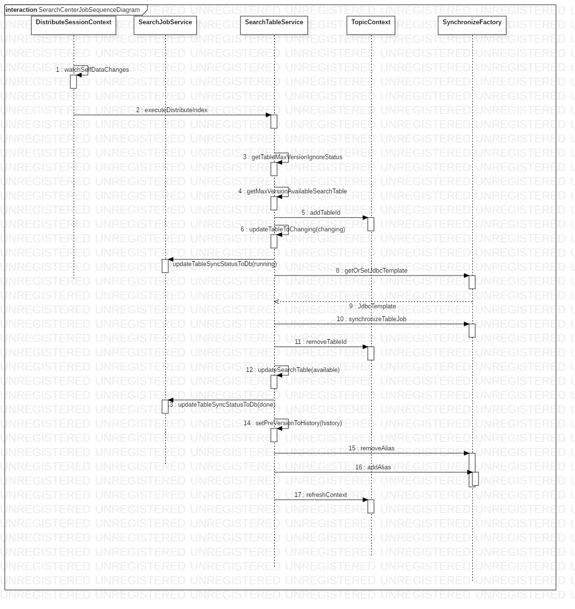
消息消费流程图
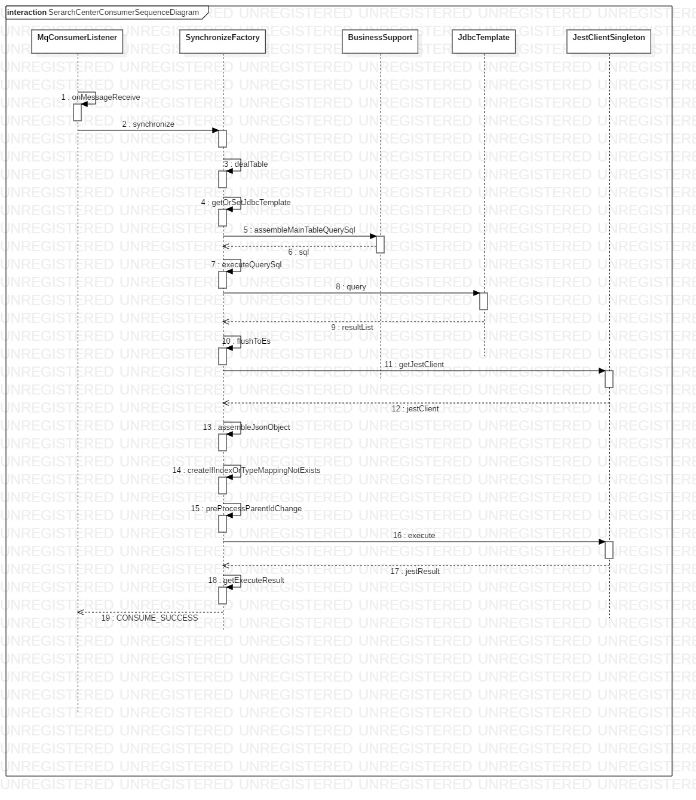
DDL-SQL
tnp_search_tnp_kafka_offset.sql
tnp_search_tnp_search_change_snapshot.sql
tnp_search_tnp_search_column.sql
tnp_search_tnp_search_column_table.sql
tnp_search_tnp_search_database.sql
tnp_search_tnp_search_dynamic_word.sql
tnp_search_tnp_search_job.sql
tnp_search_tnp_search_relation_top.sql
tnp_search_tnp_search_table.sql
tnp_search_tnp_search_table_syns_log.sql
tnp_search_tnp_search_topic.sql
结束
代码正在脱敏。。。。稍后即来。。。。